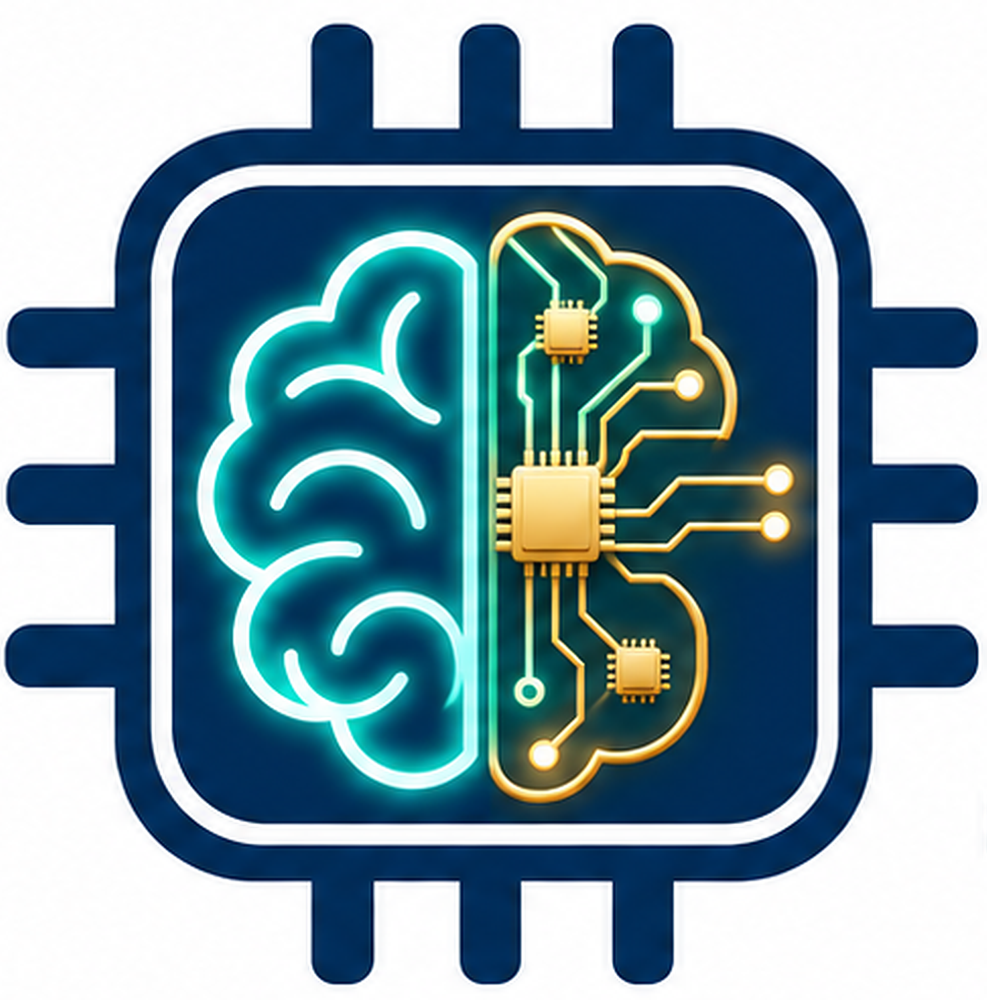
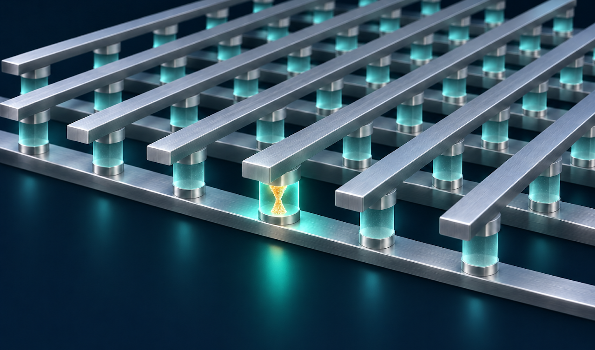
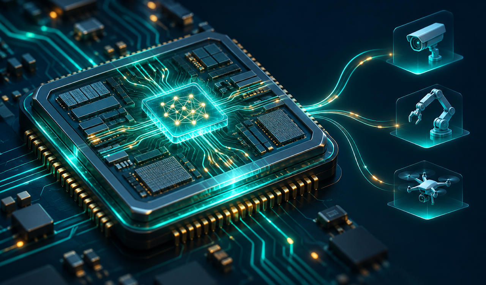
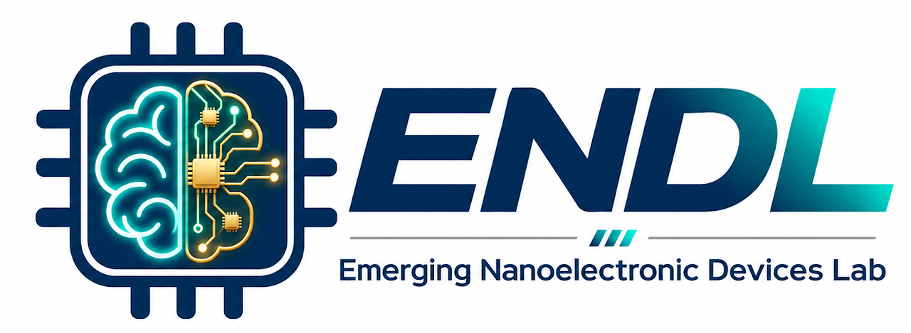
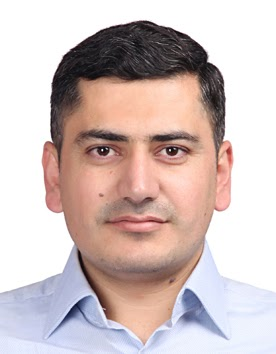
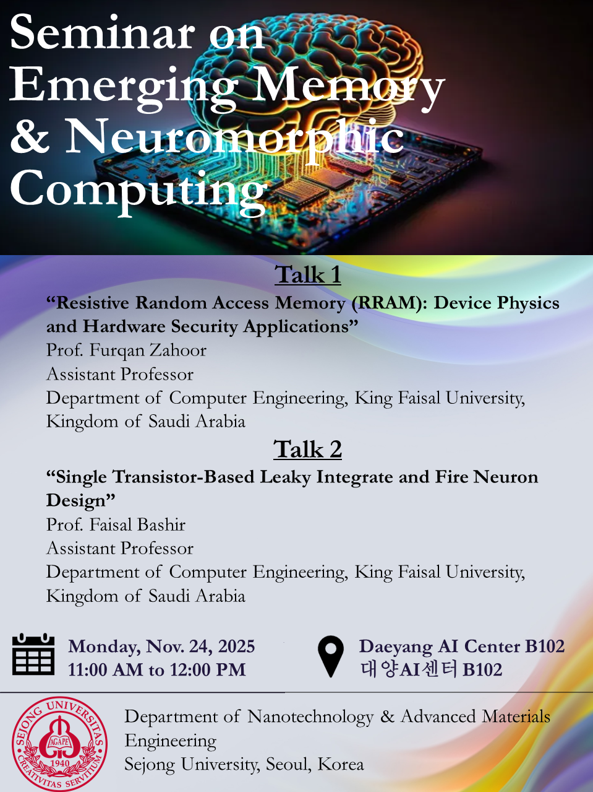
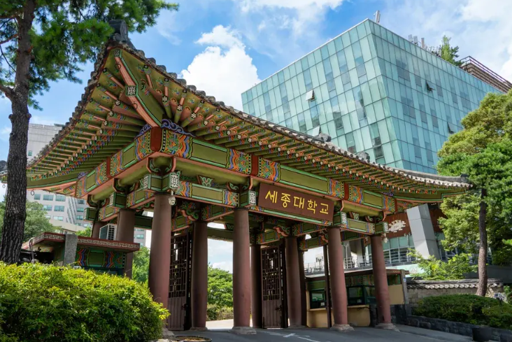

Memristive Devices & RRAM
Design and optimization of resistive switching devices for non-volatile memory and in-memory computing.

EMERGING NANOELECTRONIC DEVICES LABENDL | SEJONG UNIVERSITY | SEOUL, KOREAAt the intersection of nanoelectronics, artificial intelligence hardware, and emerging memory technologies, ENDL advances intelligent electronic devices and systems for the next era of computing.
From fundamental switching mechanisms to practical device architectures, we explore materials and systems that make computing more adaptive and efficient.
Design and optimization of resistive switching devices for non-volatile memory and in-memory computing.
Development of artificial synapses and neurons for brain-inspired computing systems.
Exploration of advanced materials and device architectures for next-generation electronics.
Enabling low-power, high-performance computing solutions for edge and large-scale AI applications.



The Emerging Nanoelectronic Devices Laboratory (ENDL) advances intelligent electronic devices and systems at the intersection of nanoelectronics, artificial intelligence hardware, and emerging memory technologies.
We combine advanced material engineering, nanoscale device physics, and electrical characterization to create memristive devices, resistive switching memories, and neuromorphic hardware for energy-efficient, scalable computing.
Our work explores in-memory computing and brain-inspired information processing, with the goal of moving beyond the limits of conventional von Neumann architectures. From fundamental switching mechanisms to practical device architectures, ENDL works to enable intelligent, adaptive, and energy-efficient computing for future AI systems.

Department of Nanotechnology & Advanced Materials Engineering, Sejong University, Seoul, South Korea
Neuromorphic Device Lab (NDL), School of Electrical and Electronic Engineering, Nanyang Technological University (NTU), Singapore
Research Institute of Industrial Science (RIIS), Division of Materials Science and Engineering, Hanyang University, Seoul, South Korea
Nano Electronic Devices & Materials Lab (NEDML), Division of Materials Science and Engineering, Hanyang University, Seoul, South Korea
Myongji University · Yongin, South Korea
Sir Syed University of Engineering and Technology · Karachi, Pakistan
Journal papers, conference presentations, and patent records listed on the original ENDL website. Search by author, title, journal, or year.
* Corresponding author · † Equal contribution
Announcements and events shared by the laboratory.
Join us at Sejong University for a special seminar on Monday, 24th November 2025, at 11:00 AM in Daeyang AI Center B102.
This session will feature two invited talks by distinguished professors, Dr. Furqan Zahoor and Dr. Faisal Bashir, from King Faisal University discussing cutting-edge developments in emerging memory technologies and neuromorphic computing, key areas shaping the future of AI hardware and next-generation electronics.
A great opportunity for students and researchers to gain new insights and engage in fruitful discussions. Looking forward to an inspiring session!

We welcome conversations with students, researchers, and collaborators interested in emerging devices and intelligent computing.
